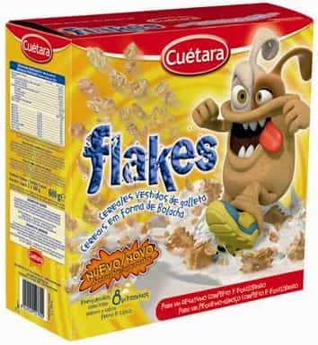

< < < Back
Can A Flaky Chick Be Fixed? – Return Of Kings
From my and many other people’s observations of the world today, it would seem that the full-blown flaky chick has become widespread in the female population — an accepted way of being, on an ever-increasing basis over the past couple of decades. You can now even download an ‘app’ questionnaire from iTunes called “Is she a flake?” as a litmus test to apply when you meet a girl. So why the huge rise in the Flaky Chick Phenomenon? There are many reasons for this — social, psychological and historical. These aspects are developed in full in the unabridged version of this article (link given below). But here in this extract I want to ask the question: Can a flaky chick be fixed?

Many men think that they can “fix” a flaky chick. This is a huge illusion. Any man who becomes emotionally involved with a flaky chick is setting himself up for a great deal of misery. The flaky chick can make herself seem very appealing at first. She is often intelligent, attractive, creative and engaging and manages to seduce many people into being friends with her and admiring her. But if a man becomes intimate with her, he will begin to notice little things which ring alarm bells. This will increase until he realises that he has become involved with a monster from whom he cannot walk away unscathed. If he is a very weak character, the two of them can get stuck in a relationship of co-dependency and feed off each other’s destructive pathological patterns. Many marriages and partnerships exist in that “flaky chick/weak male” state for years.
Flaky Chicks Fear The Alpha Type
An interesting observation is that flaky chicks can hardly bring themselves even to catch the eye of the more alpha type of male — the very one who would most likely be able to “fix” her in the best kind of a way. They find such a man so catastrophically threatening that flaky chicks almost pretend that those men don’t exist. This is because of the possibility of rejection or abandonment either due to his ability to see through them (which he does) or because they fear that such a man will not be interested in them (which he won’t) or, if they were to embark on a relationship with him, he would soon reject and abandon them for another (which he most certainly would!). Flaky chicks will look right through such men. They will even cross the street to avoid them.
Some of the more new-agey type of flaky chicks will say such trendily amusing lines as: “That guy’s got really dark energy” to conceal their fear. What they really mean is that they are frightened stiff of him because he’s no fool. It is interesting that many flaky chicks are attracted to the new-age scene, mainly because they can disguise their inner terrors behind a smorgasbord of “spiritual” jargon, hypnotic chanting, “transformational energies” and supposedly “higher consciousness activities”. I know quite a few Reiki Masters, Aura Therapists, Life Coaches, etc., who are among the most flaky chicks of all in their personal lives — who’ve left a mountain of abused male wreckage in their wake — yet who manage to pass themselves off to the public as enlightened beings! The perfect cover.
The more conventional, less hippy type of flaky chick will hide her fear behind an assertion to her friends and anyone who will listen that the more alpha type of male in her vicinity is a shallow womanizer and therefore should be shunned. Whether or not this is true is completely irrelevant to the flaky chick. She is not interested in truth —only in surviving intact from threats to her ego; so she will invent any story which assists that goal. The reality of course is that she is frightened to death (literally) of anyone who she feels will see beyond the external image she presents to the world and right into her secretly broken, messed-up, strung-out little heart.
Flaky Chicks Exist As A Bid For “Girl Power”
Flaky chicks are massively on the increase in the present era. This is due to a number of social and psychological causes. It has almost become the norm for a girl to be flaky in some circles — something to be cultivated, a sign of some sort of zany “Girl Power” and a way of “resisting the patriarchy” in a social setting. The female must always be seen to have the upper hand to right the balance which has allegedly gone all the way of men for thousands of years, etc. This kind of skewed thinking has made a contribution to the flaky chick phenomenon, and she is construed by many women as an independent and liberated example of women who don’t need men.
Most women will not tolerate any criticism of a woman or groups/categories of women. Indeed, there is almost a conspiracy to keep this behaviour out of view or shove it under the carpet and claim it doesn’t exist because to discuss the very idea of flaky chicks is deemed by them to be “sexist”, offensive to women and patronising — misogynist even, a symptom of patriarchy putting down women — even though many of those same women would have no problem spending their time putting down men.
Every year dozens of articles and books are written about the rise of the sociopathic male which, in many ways, is true. Yet no one denounces those works as sexist, offensive or misandrist. It seems today that one can say anything derogatory about men (even if it is patently untrue); but to make reference to unwholesome developments in the realm of women is anathema and must be airbrushed instantly from the world of letters. This is reminiscent of totalitarian dictatorships such as one finds in George Orwell’s “Nineteen Eighty-Four”, where to criticise the regime even in the most constructive of ways means instant denunciation and ostracism by “the Party”. Whatever happened to the equality allegedly sought by women today?
Is The Flaky Chick Concept “Sexist”?
Many women would go so far as to deny that there is an issue at all, claiming that the flaky chick phenomenon doesn’t exist and that it is a sexist concept. The issue, however, is not whether the idea of the flaky chick is “sexist” but whether or not it is true. Obviously, it would be wrong to malign women in totality, or any gender/social/racial grouping. But it is not wrong to expose behaviour or phenomena — regardless of what grouping it is in — which undermine social cohesion and good relationships.
We don’t expose flaky chicks because they are women but because they are flaky. It just so happens that by far the majority of flakes are female. (The same is true of Borderline Personality Disorder, where it is officially recognised that about 75% of sufferers are women). I love women as women, when they behave like real women, but the huge and growing number of flaky chicks out there — ranging from teens to forty-somethings — are a blot on the map of life today and are letting down their gender, not to mention the wrecked relationships and vast number of men who have been damaged by them.
Flaky Chicks Exist Because Many Women Do Not Value Men
Another factor in the rise of the flaky chick phenomenon has been because a very large number of women simply do not value men anymore. Men are seen as the enemy, the competition, potential rapists to be used for sex or money and even abused and ignored but never respected, admired or adored. This is not an exaggeration. As proof that men are not valued in society to the same degree as women, consider this: how often, in media advertising, do you see the men portrayed as incompetent, subservient idiots and the women as calm, in-control problem-solvers? This is a way of devaluing men by social engineering.
As another example of the way that men are no longer valued, if a woman cuts off a man’s penis and throws it in the garbage it is treated as a huge joke. Snickers all round. He must have done something to deserve it. The woman is almost celebrated as a courageous heroine who has acted out what many women secretly desire to do while the man is shamed forever. Newspapers write jokey columns about it and they compete with each other to create the wittiest headline. Videos about it become a viral frolic on social media with many women cheering them on. However, if a man cuts off a woman’s breast and throws it on the fire, there would be international outrage. A day of mourning would be declared. Minutes of silence would be held everywhere. Special ribbons in honor of the mutilated victim would be designed and worn across the world. Newscasters would feel obliged to wear one. Using a specially-supplied educational kit containing a picture of the amputee, schoolteachers would hold sessions for their classes on women as the victims of male violence.
The same kind of process happens if a woman kicks a man in his testicles. In spite of the potential for serious injury, it is treated as something to be snickered at. Not very serious. Bit of a joke really. Guffaw, guffaw. She is congratulated (“You kick ass, go girl!”) and there is a sense of victory and payback among many women. Yet if a man kicks a woman in the crotch, he would be immediately arrested for serious assault and held up before the world as a disgraceful example of male violence and part of a “rape culture mentality” by attacking a woman in the most sacred area of her anatomy. One can say anything about men today and it is completely acceptable. But to make any kind of criticism of a woman is deemed to be sexist and misogynist. It is this kind of imbalance in the failure to value men to the same degree as women in society today which has prepared the ground for flaky chicks to feel that they can abuse men with impunity because they “kick ass” too. Kicking men’s ass today is the new cool. Whatever happened to the oft professed notion that all women want is equality with men? (Rhetorical question, no need to respond).
Flaky Chicks Exist Because Of A Downgrade In Politesse
Coupled with that, there has been a general downgrading in politesse during the last couple decades. People in general just do not feel the same desire to be courteous and respectful to others, or to have a sense of duty and honour (remember duty and honour?). This has had fallout in the sphere of man-woman relations, as gallantry or courtliness are frowned upon as prehistoric, while showing favour or courtesy to a woman are often perceived as being the signs of a philanderer, or “grooming”, or even as a case for a sexual harassment lawsuit!

Flaky Chicks Exist Because Of Poor Parenting
Another cause of the rise in the flaky chick phenomenon is that we are now reaping the result of at least one whole generation of poor parenting. Girls who have been “spoiled to death” and/or “princessed” by their parents (especially the father) during childhood are almost destined for the role of “Entitlement Princess” in teenage years and adulthood. That, coupled with other forms of defective parenting, such as sexual and physical abuse or abandonment and rejection, often generates that heady mix of Narcissistic Personality Disorder and Borderline Personality Disorder — the foundation of the full-blown flaky chick.
Flaky Chicks Are Inwardly Terrified Of Rejection And Abandonment
What is it that lies at the heart of the full-blown flaky chick’s pathology? What is it that fuels her shockingly selfish behaviour and feelings of entitlement? My own researches have shown me that a very high percentage of flaky chicks have been in repeated abandonment/rejection scenarios at a sensitive age or they have been physically or sexually abused. One of the principal motivations for the flaky chick’s comportment is a fear of rejection or abandonment. Her whole world is concentrated on keeping these two elements out of her life.
The ordinary way of dealing with those things is to take action after they have happened. But the flaky chick lives in such a state of subliminal terror that she takes action before they have taken place — and in very drastic ways. This is one of the reasons for her huge anger if her strategies are uncovered. The façade must be maintained at all costs. The front must be preserved, whatever it takes. For the flaky chick cannot ever fully give herself to a relationship for fear of being rejected or abandoned. Most people know that rejection or abandonment is possible in a relationship but they still take the risk anyway. They reckon it’s worth it.
For the flaky chick, however, any notion of rejection or abandonment is akin to death. Her game is control and she has mastered the art. That is why she breaks off suddenly and inexplicably during text messaging. That is why she will disappear for days on end. That is why she reneges on appointments. That is why she tells lies to put people off the scent. These are all strategies to avoid commitment, to avoid being there for the other person. They are all strategies to deny love — to obstruct relationships.
She cannot give herself completely to anything or anyone for fear of rejection or abandonment. So her scattiness and unreachableness, in her own mind, keep her safe. She is “all over the place” so she doesn’t have to commit herself to one place alone. She manages to garner enough admiration from casual observers, general friends and acquaintances, so she doesn’t need to act out with them. Therefore they are often fooled by that façade and will never believe that she is the wife or lover from hell. But those who have been most intimate with her have tasted her terror and the bloody wrath which results from it.
So when you bring together that acute terror of abandonment or rejection with the narcissistic elements of being unable to withstand even a hint of criticism and an obsessive horror of being put down or having the narcissistic bubble burst, you can begin to understand the desperate interior pathology of the flaky chick, disguised behind her cool and engaging exterior.
Flaky Chicks Are Actually Rapists
The flaky chick is not some relatively harmless womanly aberration about which we can have a playful chuckle. The full-blown flaky chick is the female equivalent of the male rapist. Rape of any kind is an appalling crime. It is a violation of the whole human being in all senses. But if we think of rape merely in its physical aspect, then we are failing to understand the meaning of violation. Even a woman who has been raped will tell you that the experience was a blow to much more than merely her body.
The flaky chick violates men. It may not be rape in the technical sense of the law or in how most people think of it; but it is the equivalent. To deny this would be a staggering act of willful ignorance. A man who has suffered at the hands of a flaky chick in a lengthy relationship will feel just as violated as a woman who has been raped. In fact, such a man will feel as if he has been repeatedly violated rather than having had just a one-time experience in a park or alleyway. Many men have been completely broken and permanently traumatized by the women referred to in this paper as flaky chicks. I have spoken to many of them and much has been documented elsewhere too (see here for example). These are urgent words and are not to be taken lightly.
Epilogue: Flaky Chicks Cannot Be Rescued
Please do not imagine that you can play the dashing Knight and rescue the full-blown flaky chick. No matter how much compassion you may feel for her, no matter how much you think you understand her or can help her or redeem her, she is a law unto herself and she will never let you get near enough for her to be helped. She has no conception (or, rather, cannot allow herself to have any conception) of the full extent of her condition and will do everything she can to convince you and everyone else that it is you who is the deranged one.
Walk away and preserve your sanity, your integrity and your dignity. That is the only counsel I can give. This woman is beyond help or redemption, as too many men have discovered to their cost.
(This article was extracted from “The Flaky Chick Phenomenon or Entitlement Princess Syndrome”, by Alan Morrison. Click here for the complete article)
Read More: Has Female Attention Whoring Finally Reached Its Peak?


{kind=link}
{kind=link}